|
|
|
plants text index | photo
index
|
| mangroves |
| Bakau Bruguiera sp. Family Rhizophoraceae updated Jan 2013 Where seen? While Bakau putih (Bruguiera cylindrica) is one of the most commonly seen trees in our mangroves, others are less common, and some are quite rare. Features: A tree generally with knee roots, sometimes without. Leaves eye-shaped, shiny green and stiff, lacking the tiny black spots on the underside that is typical of Rhizophora. Flowers small, usually with cup-shaped calyx. Petals thin and fringed with hairs. The stamens are enclosed in pairs in a 'pouched petal'. When triggered, the pouch explodes, dousing the pollinator with pollen. Propagule develops on the parent plant and may be long and thin or thick and short depending on the species. Human uses: The timber and other parts of these trees have many traditional applications. See the fact sheets for the individual species for more details. Status and threats: Lenggadai (Bruguiera parviflora) is listed as 'Endangered' and Bakau mata buaya (Bruguiera hainesii) and Tumu berau (Bruguiera sexangula) are both listed as 'Critically Endangered' in the Red List of threatened plants of Singapore. |
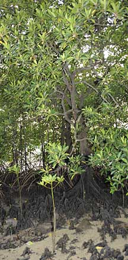 Tumu with buttress and knee roots St. John's Island, Aug 09 |
|
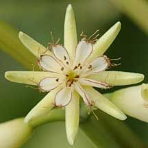 Typical pouched petals of Bruguiera. |
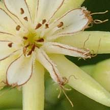 Open and closed pouched petals. |
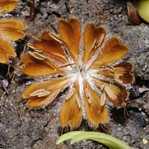 Fallen petals. |
|
Bakau
putih
Bruguiera cylindrica |
||
|
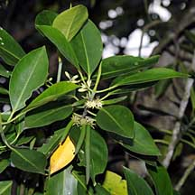 Small flowers several on one stalk. Calyx usually pale. |
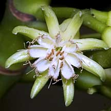 Tassels on petal tips. |
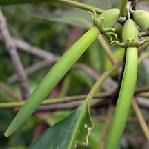 Sepals on propagules bend towards stalk. |
|
Bakau
mata buaya
Bruguiera hainesii |
||

Medim-sized flowers, each on one stalk. Calyx usually pinkish or yellowish. |
 Tassels on petal tips. |
 Sepals held away from the propagule. |
|
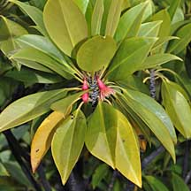 Large flowers, each on one stalk. Calyx usually red, sometimes pale. |
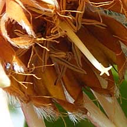 Tassels on petal tips. |
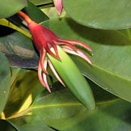 Sepals bend towards the propagule. |
|
Tumu
berau
Bruguiera sexangula |
||
|
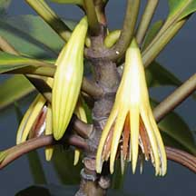 Large flowers, each on one stalk. Calyx usually yellow. |
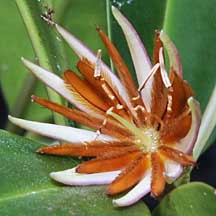 No tassels on petal tips. |
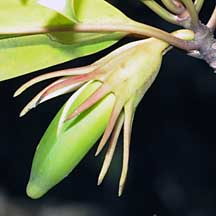 Sepals extend away from the propagule. |
|
Lenggadai
Bruguiera parviflora |
||
|
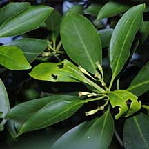 Long narrow flowers, several on one stalk. Calyx very long and narrow, pale. |
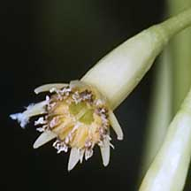 Tassels on petal tips. |
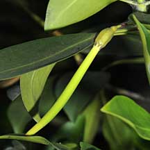 Sepals clasp the propagule. |
|
Links
References
|
|
|